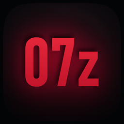

07z
Frontend homebrew y port no oficial para jugar a tu propia copia de FIFA 07 de PC en Nintendo Switch.
Proyecto NO oficial, sin relación con EA. Esta web y 07z no incluyen ni distribuyen el juego FIFA 07 ni ningún fichero con copyright de Electronic Arts. Debes aportar tu propia copia de FIFA 07 de PC. FIFA y sus marcas son propiedad de EA.
🎮 ¿Qué es 07z?
07z es un frontend homebrew —y el envoltorio que lo acompaña— que hace que tu copia de FIFA 07 se ejecute en una Switch con custom firmware como si fuera un juego nativo: sin ver nunca Wine ni menús intermedios.
- Icono propio en el menú de inicio de la consola (07z).
- Interfaz hecha a medida (Jugar · Configuración · Créditos) con estética Horizon.
- Wine invisible: el frontend lanza el juego directamente.
- Un jugador con la consola y/o el mando 1. El segundo jugador está en pruebas y aún sin verificar (ver abajo).
- Mapas de teclas editables desde la propia interfaz.
📥 Descarga
Necesitas tres ficheros: el frontend, el runtime y el NSP que crea el icono del HOME. (El juego no se descarga aquí.)
1 · NSP forwarder
Crea el icono «07z» en el HOME. Se instala con DBI, Goldleaf, Tinfoil o Awoo.
2 · 07z.nro
El frontend 07z. No incluye el juego.
3 · wine-nx-runtime.nro
El runtime (software libre de terceros). Se copia junto al frontend.
🛠️ Instalación en 4 pasos
1) Copia a la SD:
07z.nro -> sdmc:/switch/fifa07/07z.nro
wine-nx-runtime.nro -> sdmc:/switch/fifa07/wine-nx-runtime.nro
2) Pon TU juego en:
sdmc:/switch/fifa07/drive_c/FIFA 07/fifa07.exe
3) Instala el NSP (07z-forwarder.nsp) con DBI / Goldleaf / Tinfoil / Awoo.
4) Abre el icono "07z" en el HOME y pulsa JUGAR.
📖 Guía completa: docs/INSTALACION.md
🧪 En desarrollo / experimental
Segundo jugador / dos mandos. Existe una compilación del runtime que, en teoría, permitiría leer los dos Joy-Con por separado (un jugador cada uno). Aún NO está verificada en consola, la fusión de los mandos en un solo jugador sigue siendo el comportamiento por defecto, y hay dudas razonables de que FIFA 07 (un juego pensado para teclado) permita realmente un segundo jugador por teclado. Trátalo como experimental.
❤️ Apoya el proyecto
07z es gratuito y sin ánimo de lucro: sin publicidad y sin versión de pago. Detrás hay una sola persona y muchísimo tiempo. Si te ha gustado y quieres que siga publicando ports de otros juegos para Switch, puedes apoyar con una donación por PayPal o, si prefieres, difundiendo el proyecto: cada aporte se traduce en más ports. Y si no puedes colaborar, no pasa nada: entra, juega y disfrútalo. 🎮
🙏 Créditos
07z se apoya por completo en el trabajo de otros. Todo el mérito de las piezas base es suyo.
El runtime de Windows sobre Horizon OS
La base de la compatibilidad Win32
Framework de UI homebrew
Base del homebrew de Switch
Toolchain (devkitA64)
Referencia de integración